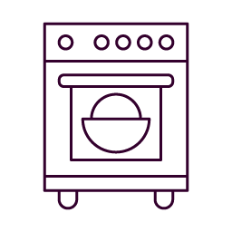
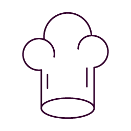

Crunchy sugar, smooth creamy center - a french classic!
400 ml heavy cream
140 ml whole milk
85 g sugar (brown or white)
5 egg yolks
1 vanilla bean, scraped, or vanilla essence
lemon zest
extra fine sugar for caramellizing
Active: 20 mins
Resting: 4 h
Baking: 55 mins
Total: 5 h 15 mins

Preheat oven to 150°C
Bake 55 mins
Whisk cream, milk and egg yolk and mix with the remaining ingredients. Let set for at least 30 minutes (or overnight).
Pour into fireproof moulds and place in a big pan on the middle rail of the hot oven. Fill the pan with boiling water and bake /
let it set during 55 minutes. The top side will be a little blistery and brown, which is totall fine.
Let the moulds cool, (the mixture is still flabby straight from the oven, but this
changes when it is cold) and let it chill in the refrigerator for at least 2 hours (or overnight).
Spread a thin layer of sugar (approx. 1 tbsp per mould) on each créme and caramelize slowly and evenly with a flambé burner until a smooth crunchy layer has formed.
Enjoy!

Never put the sugar on the unwhisked egg yolk, because creates mean small sugar-egg yolk crumbs that will no longer dissolve completely.
For best results put the molds in the freezer right before caramelizing to ensure that they are nice and cold.